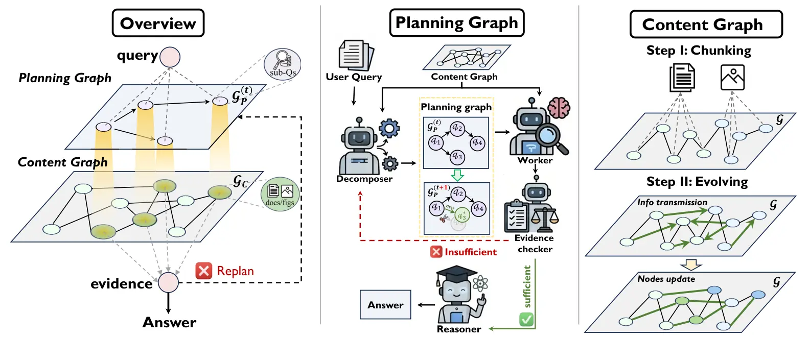
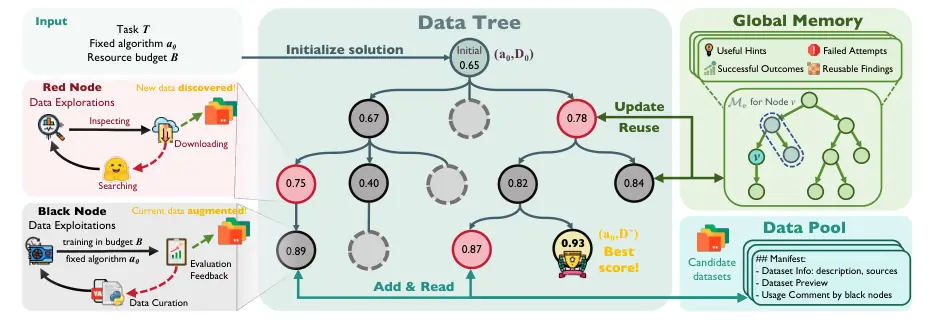
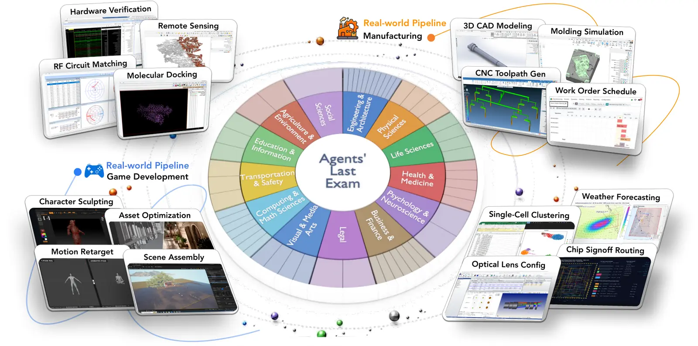

Capable agents are not enough. We need to know why they work, when they fail, and what survives deployment.
LLM agents · RL · evaluation
Zimeng Chen 陈梓萌
I study how AI agents can be evaluated and improved under long-horizon and deployment constraints. My current work focuses on reliable evaluation of coding agents that build interactive 3D worlds at UC San Diego's Q-Lab and deployment-aware reinforcement learning for language models at APEX Lab.
01 · About
What I care about.
I am an undergraduate at the School of Computer Science, Shanghai Jiao Tong University. My research connects agent reliability, reinforcement learning for reasoning, and the systems needed to evaluate long-horizon behavior.
LLM Agents
Agent Memory
Recursive Self-Improvement
Reinforcement Learning
Agent Evaluation
Multimodal RAG
Low-bit Deployment
01 Reliable agent systems
I design verifiers and evaluation workflows that separate semantic alignment, spatial correctness, physical validity, and task completion instead of compressing every failure into one score.
02 RL under deployment constraints
I study how reinforcement learning objectives should change when the deployed policy runs under low-bit quantization, long rollouts, and imperfect numerical execution.
03 Agent memory & self-improvement
I am particularly interested in agent memory and recursive self-improvement (RSI): how agents retain experience and improve their own strategies over long horizons. I am actively looking for research opportunities and potential co-authors in these directions.
02 · Selected work
Publications & preprints.
01
G²-Reader: Dual Evolving Graphs for Multimodal Document QA

A multimodal document QA system that jointly evolves a content graph for grounded evidence and a planning graph for adaptive reasoning.
02
DataMaster: Data-Centric Autonomous AI Research

An autonomous research framework that treats data preparation, downstream validation, and accumulated experimental evidence as a closed-loop scientific process.
03
Agents' Last Exam

A broad evaluation of agents on long-horizon, economically valuable professional workflows with verifiable deliverables and real software environments.
03 · Research
Experience
I am currently a Research Assistant at UC San Diego's Q-Lab, working on SimWorld, while continuing reinforcement-learning research at APEX Lab. Earlier work includes CMIC Lab and the Agents' Last Exam collaboration with UC Berkeley.
SimWorld · Unified evaluation of agent-generated 3D scenes
Building a verifier and benchmark workflow for coding agents that generate and repair interactive scenes in Unreal Engine.
- Designed a staged evidence pipeline spanning deterministic scene-graph checks, UE-native physical probes, and evidence-grounded multi-view VLM judging.
- Separated semantic, spatial, surface, preservation, and physical validity from ground-truth restoration fidelity.
- Integrated evaluation into an agent-agnostic harness with provenance-tracked artifacts, explicit failure handling, and reproducible scoring.
- Analyzed model trajectories, human alignment, rerun behavior, and VLM judging instability across text-to-scene and image-to-scene tasks.
Deployment-aware reinforcement learning for low-bit LLMs
Studying how to optimize reasoning policies for the numerical path they actually use at deployment rather than treating quantization as an afterthought.
- Built an end-to-end W4A16 GRPO framework using verl, vLLM, Triton, and Marlin for systematic quantization-aware RL experiments.
- Extended training and evaluation from short-form reasoning to long-horizon mathematical trajectories and multi-checkpoint analysis.
- Investigating high-precision teacher guidance that selectively corrects reward-relevant errors in a quantized policy.
Medical-software agent evaluation
Translated professional medical-imaging procedures into long-horizon software tasks with structured inputs, hidden references, and verifiable deliverables.
- Designed the MicroDicom chest-X-ray annotation adjudication task featured in the public paper.
- Combined file and schema validation, case-level hidden references, and IoU-based localization metrics.
Multimodal document QA and graph-based retrieval
Worked on the research line that became G²-Reader, extending agentic RAG from unimodal retrieval to multimodal, multi-document question answering.
- Extended MA-RAG to jointly process textual and visual evidence and integrated LightRAG as a controlled baseline.
- Ran full-scale validation on 2,271 VisDoMBench samples across five domains using a fixed retrieval budget.
04 · Education
Education
My software engineering training gave me a strong foundation in systems, algorithms, and building reliable software. I have since transitioned into artificial intelligence research, applying that engineering perspective to LLM agents, reinforcement learning, and embodied systems.

Aug 2023 — Jun 2027 (Expected)
Shanghai Jiao Tong University (SJTU)
上海交通大学 · School of Computer Science
B.E. in Software Engineering

Jul 2025 — Aug 2025
The Chinese University of Hong Kong (CUHK)
香港中文大学
Summer Exchange in Robotics and Artificial Intelligence
High School
The High School Affiliated to Renmin University of China (RDFZ)
中国人民大学附属中学 · Beijing
Secondary education
05 · Service
Service
Academic peer-review service.
2027
Reviewer · ICLR 2027
Peer review service for the International Conference on Learning Representations.
06 · Honors
Honors
Selected university honors.
- SJTU Outstanding Student2023–2025
- SJTU Merit Scholarship2023–2025
07 · Contact
Always happy to connect.
I am always happy to hear from people who reach out, whether for academic discussions, research collaborations, or conversations beyond academia. I am currently open to Fall 2027 graduate opportunities.